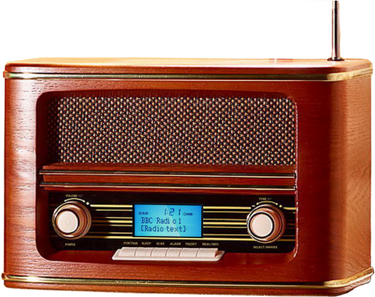
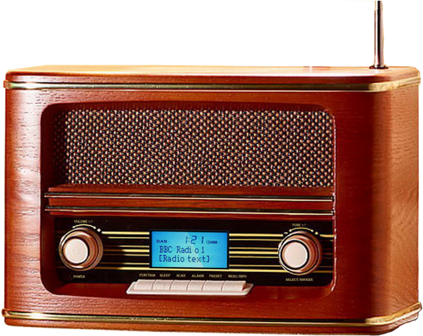

You told Harpo to beat me, she said.
No I didn't, I said.
Don't lie, she said.
I didn't mean it, I said.
Then what you say it for? She ast.
She standing there looking me straight in the eye. She look tired and her jaw full of air.
I say it cause I'm a fool, I say. I say it cause I'm jealous of you. I say it cause you do what I can't.
What that? She say.
Fight. I say.
- The Color Purple by Alice Walker
-On average, nearly 20 people per minute are physically abused by an intimate partner in the United States. During one year, this equates to more than 10 million women and men.
-1 in 4 women and 1 in 7 men have been victims of severe physical violence (e.g. beating, burning, strangling) by an intimate partner in their lifetime.
-1 in 7 women and 1 in 18 men have been stalked by an intimate partner during their lifetime to the point in which they felt very fearful or believed that they or someone close to them would be harmed or killed.
-On a typical day, there are more than 20,000 phone calls placed to domestic violence hotlines nationwide.
-Women between the ages of 18-24 are most commonly abused by an intimate partner.
Women of Color Domestic Violence Statistics:
• African American females experience intimate partner violence at a rate 35% higher than that of white females, and about 2.5 times the rate of women of other races.
However, they are less likely than whites women to use social services, battered women’s programs, or go to the hospital because of domestic violence.
• In a study conducted by the Asian Task Force Against Domestic Violence, 47% of Cambodians interviewed said they knew of a woman who experienced domestic violence.
• According to NVAWS, 37.5% of Native American women are victimized by IPV in a lifetime, defined by rape, physical assault, or stalking.
• 48% of Latinas in one study reported that their partner’s violence against them had increased since they immigrated to the US.
• Approximately one in three African American women are abused by a husband or partner in the course of a lifetime.
• A survey of immigrant Korean women found that 60% had been battered by their husbands.
 
